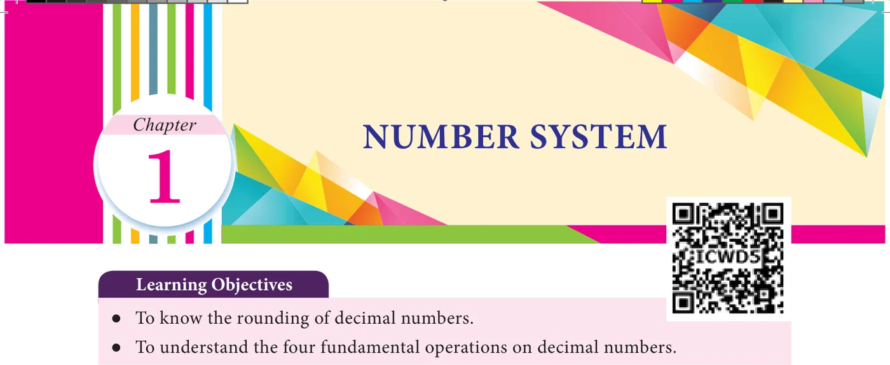
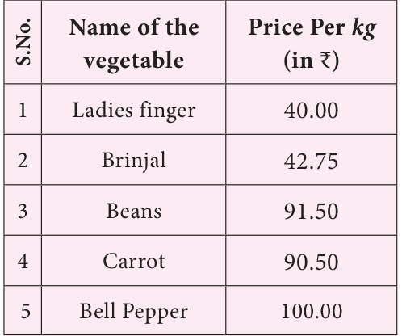

Recap-Decimal numbers
We have studied about decimal numbers in the previous term. Let us recall them now by answering the following questions.
Try these
- 1.Represent the fraction \(\frac{1}{4}\) in decimal form.
- 2.What is the place value of 5 in 63.257.
- 3.Identify the digit in the tenth place of 75.036.
- 4.Express the decimal number 3.75 as a fraction.
- 5.Write the decimal number for the fraction \(5 \frac{1}{5}\) .
- 6.Identify the bigger number : 0.567 or 0.576.
- 7.Compare 3.30 and 3.03 and identify the smaller number.
- 8.Put the appropriate sign (<, >, =).
2.57 2.570
- 9.Arrange the following decimal numbers in ascending order.
5.14, 5.41, 1.54, 1.45, 4.15, 4.51.
1.1 Introduction
Mani went to market to purchase vegetables. The price details of five different vegetables on that day are shown in the following table.

●● Mani wanted to round of each price to the nearest rupees. ●● How will you decide on rounding each number?